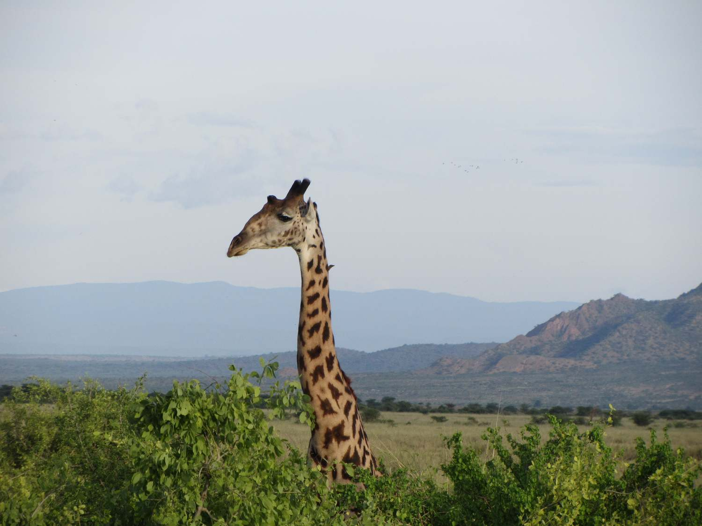

Masai Giraffe

The Masai giraffe (Giraffa camelopardalis tippelskirchii), also spelled Maasai giraffe, also called Kilimanjaro giraffe, is the largest subspecies of giraffe. It is native to East Africa. The Masai giraffe can be found in central and southern Kenya and in Tanzania. It has distinctive, irregular, jagged, star-like blotches which extend to the hooves. A median forehead lump is usually present in males.